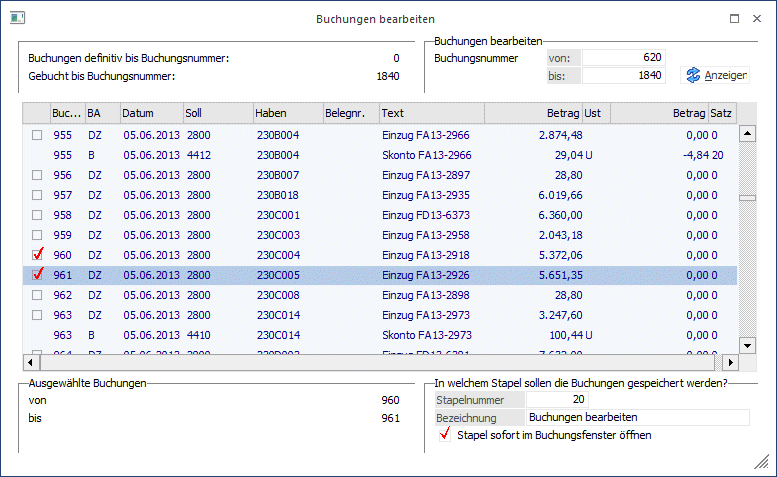
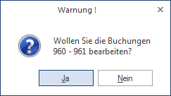
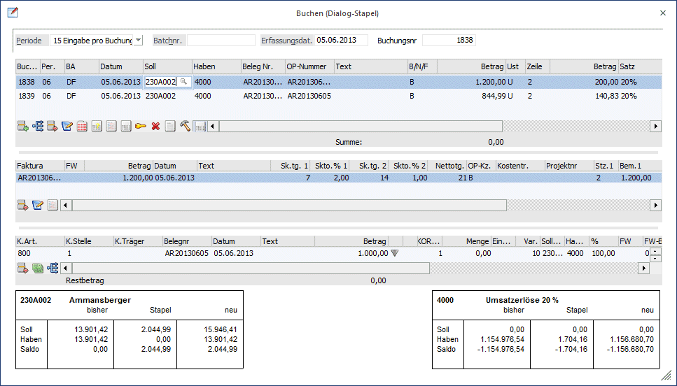
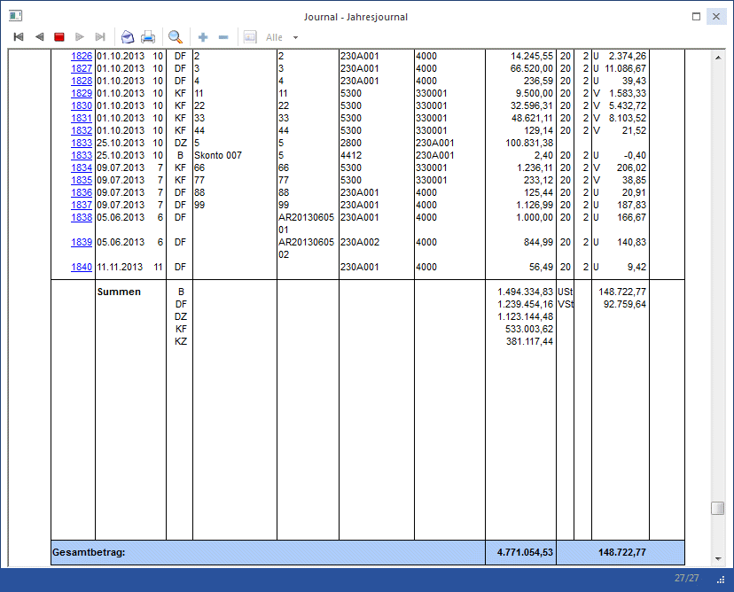
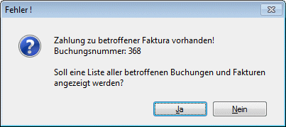
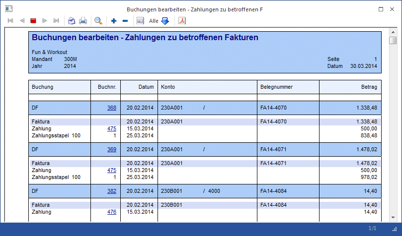

In diesem Menüpunkt unter…
1 WinLine FIBU
1 Buchen
1 Buchen
1 Buchungen bearbeiten
… können Buchungszeilen, die noch nicht festgeschrieben wurden (d.h. provisorische Buchungen, die noch den Status "vorläufig" haben) in einen Buchungsstapel geladen und editiert werden. Dabei können alle Werte der Zeile verändert werden, so wie wenn die Buchung neu erfasst würde. Selbstverständlich stellt das Programm im Zuge dieser Buchungsbearbeitung sicher, dass keine Inkonsistenzen entstehen können. Wird z.B. versucht, die Informationen einer Fakturenbuchung zu verändern, die bereits teilgezahlt oder sogar ausgeziffert worden ist, weist das Programm darauf hin, dass eine Veränderung nur dann möglich ist, wenn zuerst die Zahlungsbuchung aufgerollt wird. Voraussetzung für eine solche Veränderung ist natürlich, dass sich die betreffenden Buchungszeilen noch im Status "vorläufig" befinden. Ist eine Buchungszeile bereits "festgeschrieben" worden (siehe Kapitel "Buchungen festschreiben"), kann die Buchungsinformation in keiner Weise mehr editiert oder verändert werden.
Buchungen, die im Fenster "Splitbuchung" erzeugt wurden, können auch bearbeitet werden, allerdings können nur einzelne Buchungen zur Bearbeitung ausgewählt werden. Wird eine solche Buchung bearbeitet, bekommt der erstellte Buchungsstapel das Kennzeichen, dass er nur im Fenster "Splitbuchung" geladen werden kann und wird auch sofort in diesem Fenster geöffnet, wenn die entsprechende Checkbox im Fenster aktiviert ist.
Des Weiteren können folgende Buchungen nicht mehr bearbeitet werden:
ü Stornobuchungen
ü Fakturenausgleichsbuchungen
ü Automatischer Fakturenausgleich durch den Belegstorno in der WinLine FAKT
ü Buchungen für die der Kontenabgleich durchgeführt wurde
Bei Vorhandensein solcher Buchungen werden diese an das Ende des ausgewählten Bereichs umsortiert und nur die restlichen Buchungen werden zur Bearbeitung in den Stapel geladen.
ü Einzelne Buchungen eines
Mikrostapels
Mikrostapel können nur als Ganzes ausgewählt werden. Wird ein
Mikrostapel zur Bearbeitung ausgewählt, so kann dieser im Buchungsfenster nicht
mehr editiert werden, sondern muss gegebenenfalls entfernt und neu erfasst
werden.

Hinweis 1
Außerbücherliche Buchungen werden in der Tabelle andersfarbig dargestellt.
Hinweis 2
Ist in den FIBU-Parametern der Radiobutton auf "Sortierung nach Erfassungsdatum eingestellt, wird in dieser Tabelle auch das Erfassungsdatum der Buchung angezeigt.
In diesem Beispiel werden die noch vorläufigen Buchungszeilen 620 bis 1840 angezeigt, und von dieser Auswahl sollen die Buchungszeilen 960 und 961 in einen Stapel (Nr. 20) zur Bearbeitung geladen werden.

Ø Stapel sofort im Dialog-Stapel-Buchen öffnen
Ist diese Checkbox aktiviert, wird das Buchungen bearbeiten-Fenster geschlossen, und der ausgewählte Stapel sofort im Buchungsfenster (Buchen Dialog-Stapel) geladen.
Bleibt die Checkbox deaktiviert, wird der Stapel erzeugt; das Bearbeiten-Fenster bleibt jedoch geöffnet.
Mit Bestätigen des OK-Buttons werden diese beiden Buchungen im Stapel 1 geladen und stehen damit zum Editieren bereit.
In der Buchungszeile 1838 wurde versehentlich beim Erfassen des ursprünglichen Stapels die falsche Debitorennummer kontiert (230A002 anstelle von 230A001) sowie anstelle von richtigerweise nur 1.000,- ein Betrag von 1.200,- eingegeben.
In der Buchungszeile 1839 hat sich der Sachbearbeiter bei der OP-Nummer vertippt, was ebenfalls korrigiert werden soll.

Wenn ein Stapel mit einer
Splitbuchung aus Fenster "Buchungen bearbeiten" geladen wird, wird
in der
obersten Tabelle die Buchungsnummer angezeigt, mit der die Buchung ins Journal
eingefügt
wird. Diese kann auch editiert werden, es ist aber (wie auch im
Fenster "Dialog-Stapel-Buchen") nicht möglich, in den festgeschriebenen Bereich
zu buchen.
Die Korrekturen können im Stapel vorgenommen werden (das Programm setzt im Hintergrund selbstverständlich - wie bei einer Neuerfassung einer Buchungszeile - auch die dazugehörige OP und Kostenrechnungsinformation richtig um) - und abschließend mit F5 bzw. dem Button BUCHEN abgesetzt werden.

Im Journal (Ausgabe ALLER Buchungssätze - siehe Kapitel "Auswertungen / Journal) ist sofort die aktualisierte Information ersichtlich. Noch haben diese Buchungszeilen nach wie vor den Status "Vorläufig", da sie sozusagen noch in einem temporären Buchungsstapel gespeichert sind.
Sobald diese Buchungen im Menüpunkt…
1 WinLine FIBU
1 Buchen
1 Buchen
1 Buchungen festschreiben
… den Status "definitiv" erhalten haben, ist selbstverständlich kein einziges Kriterium der Buchungszeilen mehr in irgendeiner Weise veränderbar oder editierbar.
Im Journal und im Kontoblatt kann über die Variable 28/43 das definitiv-Kennzeichen angedruckt werden. Dadurch ist erkennbar, ob Buchungen festgeschrieben sind oder nicht, wobei folgende Kennzeichen existieren:
ü 0 = vorläufige Buchungen
ü 1 = definitiv festgeschriebene Buchungen
ü 2 = Buchungen aus dem Fakturenausgleich (diese können nicht bearbeitet werden)
Achtung
Während bei einem Benutzer das Menü "Buchungen bearbeiten" geöffnet ist, steht anderen Benutzern das Menü Zahlungsverkehr nicht zur Verfügung.
Ø Meldung: Zahlung zu betroffener Faktura vorhanden
Ist in dem selektierten Buchungsbereich eine Rechnung ausgewählt worden, zu der es bereits Zahlungen gibt, so erscheint eine Hinweismeldung mit der ersten entsprechenden Buchungsnummer:

Wird die Meldung mit Nein bestätigt, so wird wieder das Fenster "Buchungen bearbeiten" angezeigt.
Bei Bestätigen mit Ja wird eine Liste mit allen entsprechenden Fakturen und den zugehörigen Zahlungen am Bildschirm ausgegeben. In dieser Liste werden die betroffenen Buchungen mit den Fakturen (d.h. jene, zu denen Zahlungen vorhanden sind) und die entsprechenden Zahlungen bzw. Buchungen in Zahlungsstapeln (aus dem Zahlungsverkehr) angezeigt. Mittels Klick auf die jeweilige Buchungsnummer kann die Buchungsinfo geöffnet werden.
